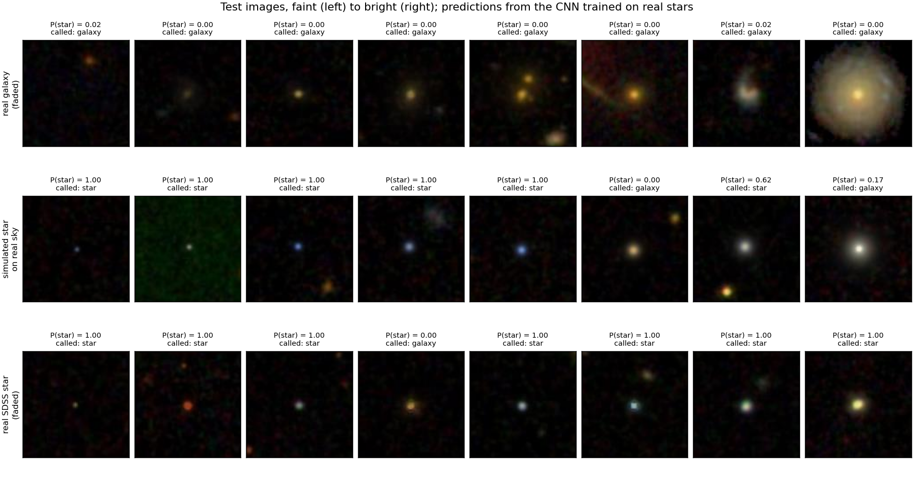
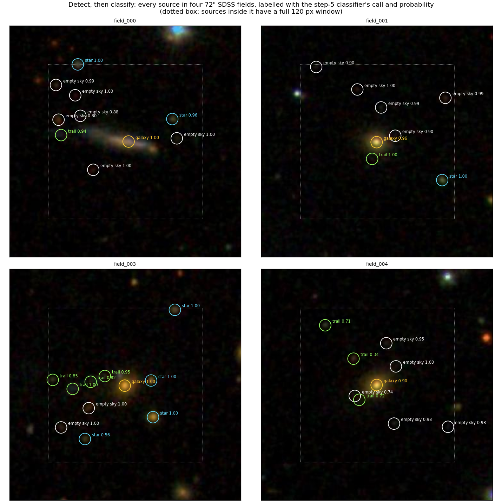

What must a simulated sky contain?
The classifier's stars and artifacts are simulated, but the sky it has to work on is real. Every improvement so far came from making the simulation more like the telescope, and each one was forced by a specific failure.
The gap to close
The 13 points between simulated and real training measure what the simulation is still missing. On real SDSS fields the network calls every catalog star a star, but it calls only 42%, 4% and 1% of catalog galaxies "galaxy" at r = 18–19, 19–20 and 20–21. Its training galaxies are all large and bright, so to the network "small and faint" means "star."

Real fields

Coming
A ledger of forward-model ingredients with a removal test for each; faint galaxies made by artificially redshifting bright ones until they become dots; and an anomaly hunt for the strangest objects in the real sky.